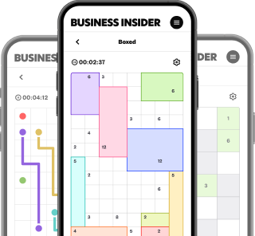
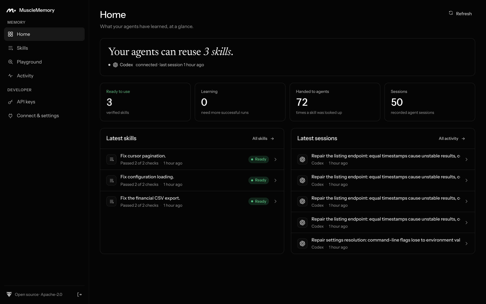
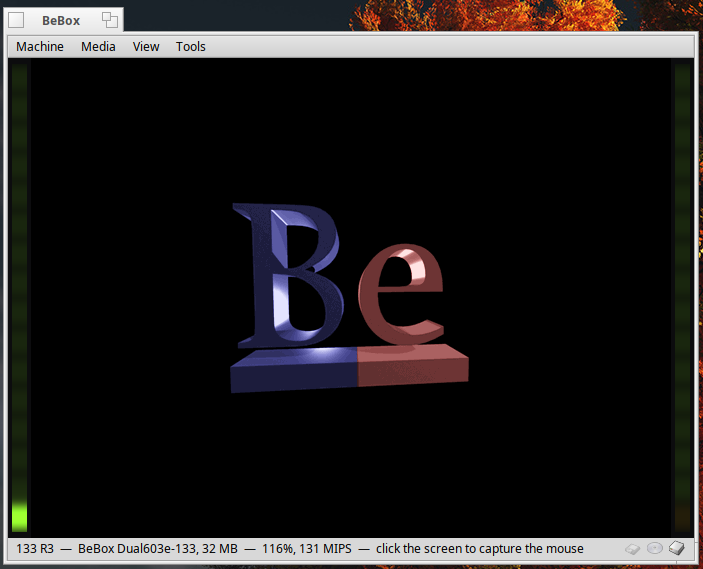

THE FRONT PAGE
EDITOR'S NOTE: A busy day in the latent space. #Judgment and craft
BREAKING VECTORS

Brin Points to Recursive Self-Improvement in Google Models
Google co-founder Sergey Brin indicates that internal architectures are nearing a feedback loop of recursive self-improvement, raising immediate questions about verification when the author of the code is no longer human. The primary risk remains compounding structural drift in codebases whose foundations are poorly understood.
MODEL ARCHITECTURES
Self-Evolving Agent Harnesses and the Drift Toward Unseen Code
As autonomous systems begin rewriting their own execution loops, software engineering trades explicit human design for statistical momentum—sacrificing predictable debugging paths for marginal gains in throughput.
NEURAL HORIZONS
Porsche Previews a Flagship Mid-Engine Supercar to Sit Above the 911
Porsche has revealed the Mission S concept, signaling development of a permanent production line positioned above the iconic 911. While it gestures toward a driver-focused interior with sparse screens and analog switches, pricing and a firm 2029 production timeline leave substantial room for engineering pivots.
LAB OUTPUTS

MuscleMemory Offers Procedural State to Autonomous Agents
An open-source library attempts to give agents persistent procedural memory, trading away transient stateless execution for state management overhead.
Muse Spark Open: A Quiet Utility in an Era of Noisy Models
Muse Spark Open arrives with modest ambitions, offering developers a streamlined interface for local inference without the usual marketing fanfare. The primary tradeoff lies in its limited ecosystem support, though its predictable memory footprint makes it a viable candidate for edge deployments.

Emulating the BeBox on Haiku: An Exercise in Architectural Nostalgia
A new emulator brings Be Inc.'s multiprocessor hardware to Haiku systems, resurrecting an operating philosophy built on concurrency long before multi-core became routine. The risk lies in maintaining complex hardware emulation atop modern layers without collapsing into unmaintainable bloat.
INFERENCE CORNER
Scaling Local Inference: MLX and RDMA on the Mac Studio
Coupling Apple's MLX framework with RDMA networking brings distributed large language model inference to desktop clusters, though interconnect latency remains a persistent bottleneck for synchronization.